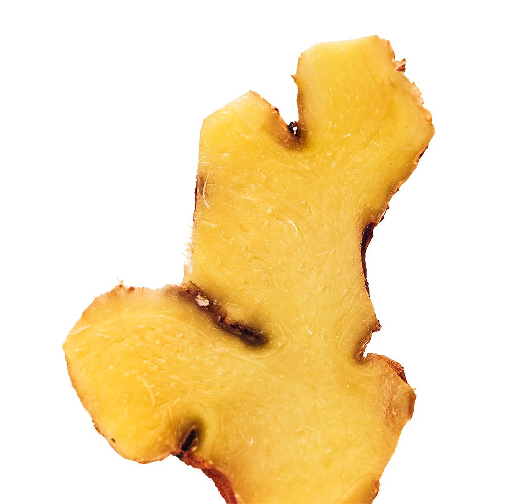
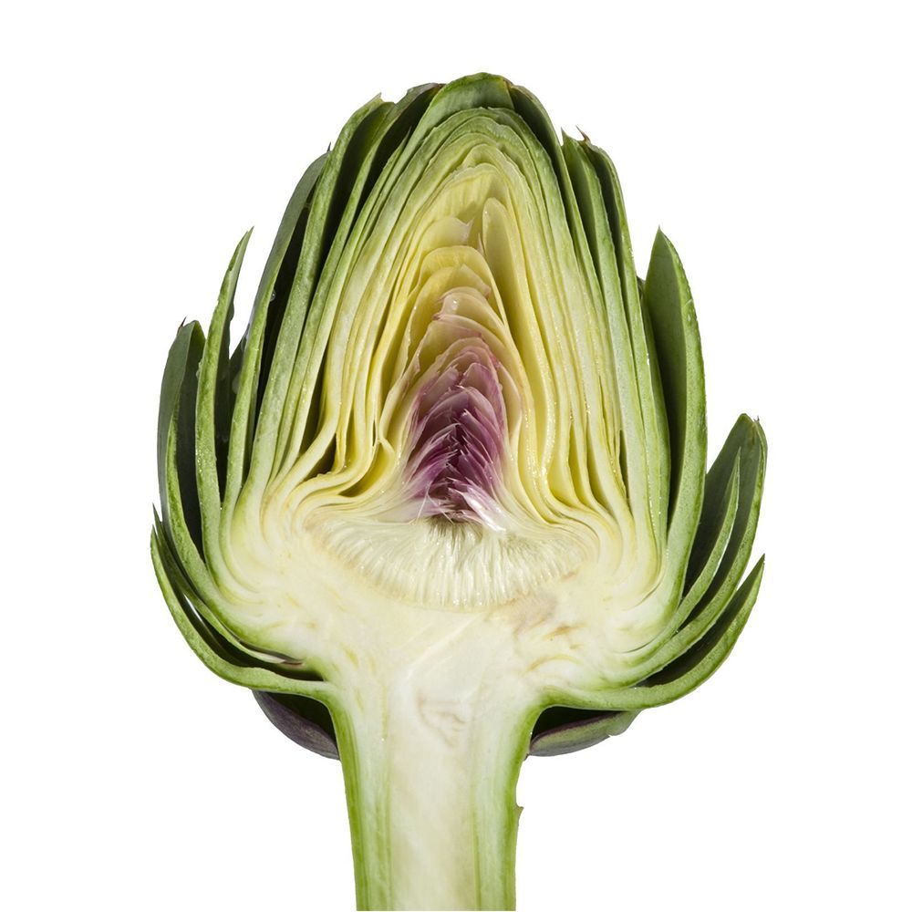

Science
Important things take a little thinking.
What is inside Night Owl, why it is there, and why the formula was not a handful of trendy ingredients in a shot.
Alcohol does not do one thing.
When we drink, the liver breaks alcohol down into acetaldehyde, an unwanted byproduct behind much of the next-day feeling. The body then works to turn that into acetate. The liver can metabolise about one standard drink an hour. Drink faster, and acetaldehyde builds.
Korean apothecary starts from a practical idea: support the body ahead of the symptom. Vitamin B6 has been linked in studies to a reduction in the severity of hangover symptoms. The rest of the formula is there to work in the same direction: nutrients alcohol draws down, botanicals chosen to sit together.
Ingredients are only half of it. Formulation is the other half, done with laboratory experience in Korea, under HACCP and GMP.
 Korean pear
Korean pear Red ginseng
Red ginseng Curcumin
Curcumin
Ginger Reishi
Reishi Vitamin B6
Vitamin B6 Vitamin C
Vitamin C
Artichoke